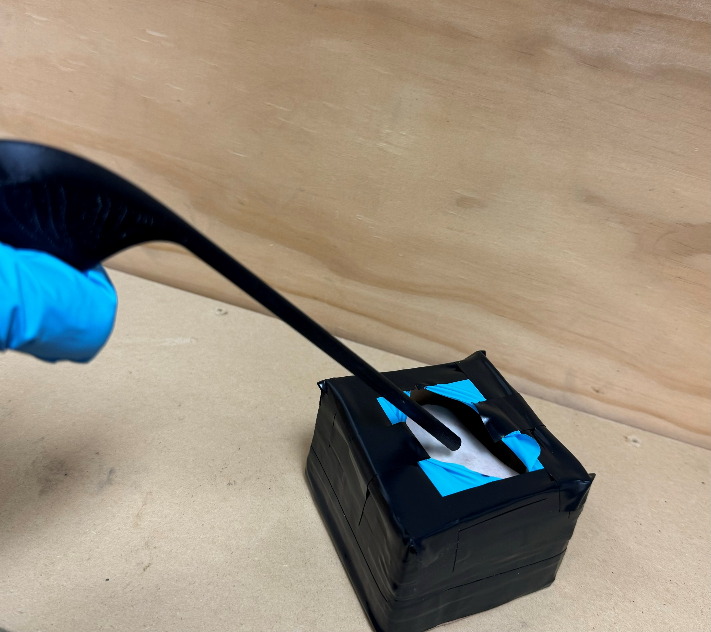
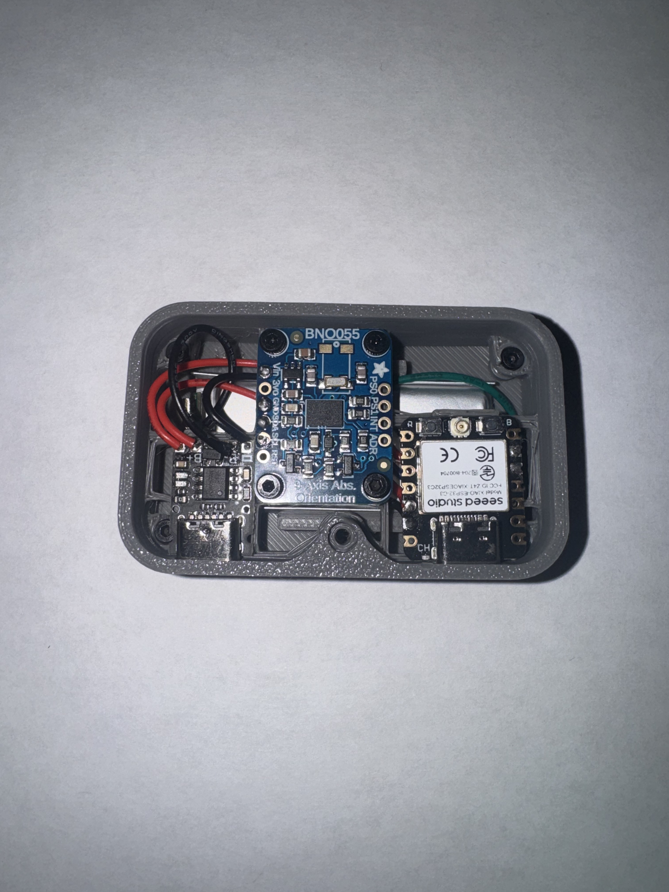
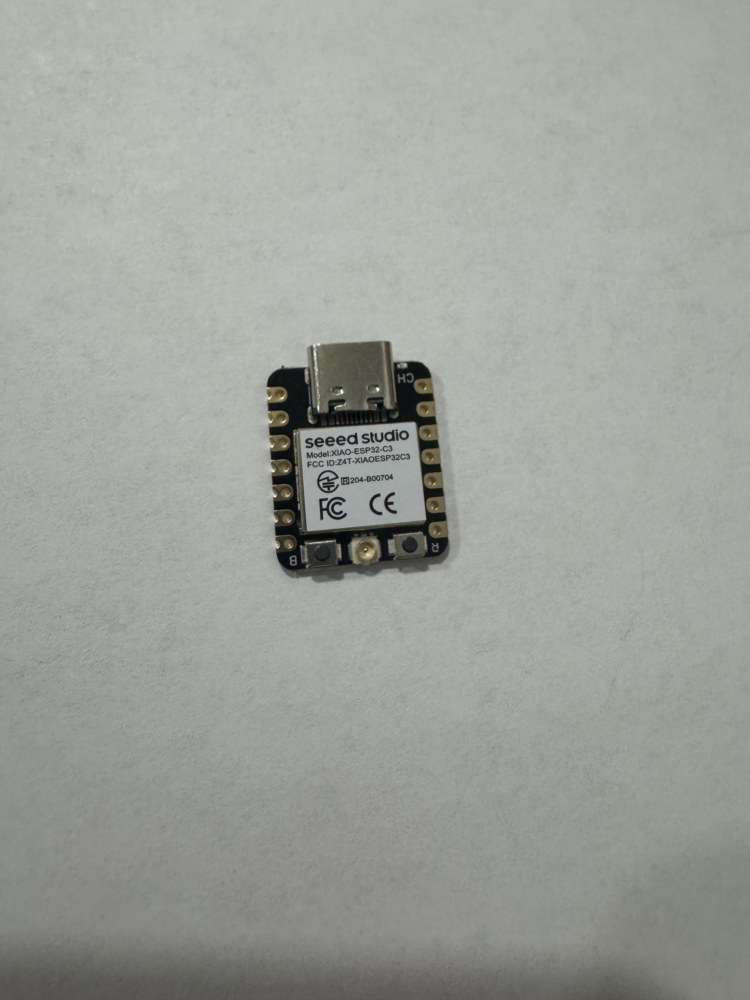
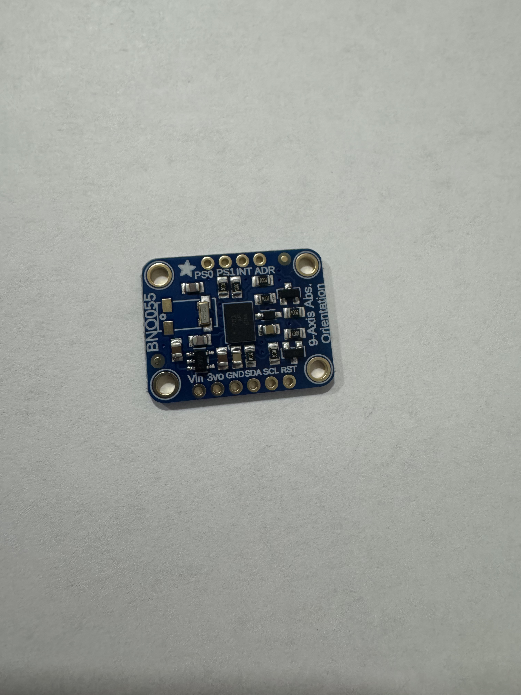
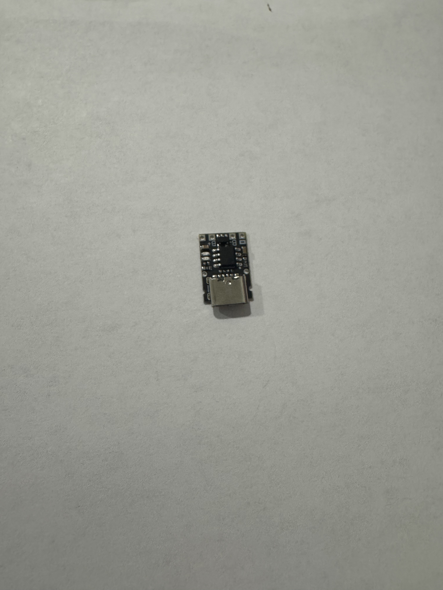
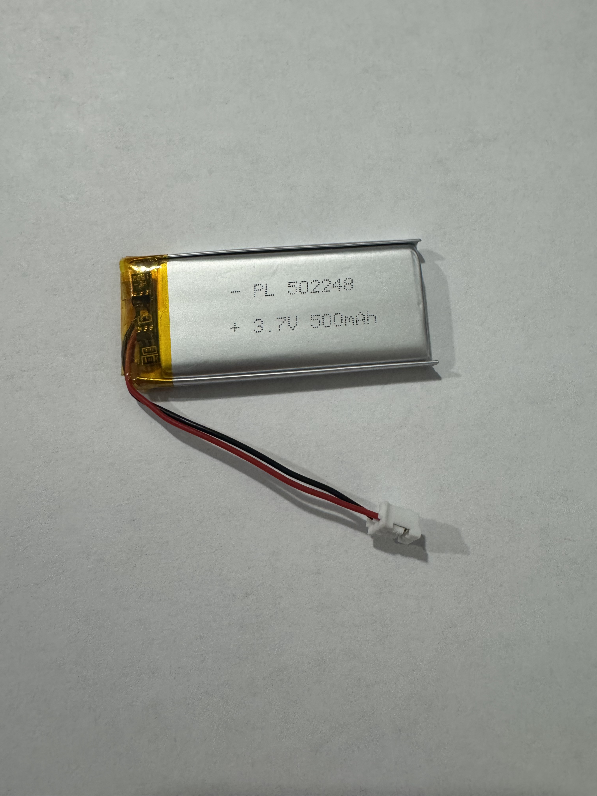
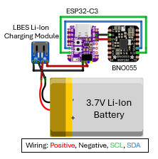

Manual Kerrison rongeurs can be slow, physically demanding, and prone to debris buildup during bone removal procedures.
Engineering Projects
Selected work in prototyping, embedded systems, and medical device design.
Project Library
Medical Device Design
OsteoX: Powered Neurosurgical Bone Removal Device
A compact surgical tool concept designed to reduce bone removal time while supporting controlled operation near sensitive tissue.
Project Overview
A cleaner, faster approach to neurosurgical bone removal.
OsteoX was developed to explore whether a powered, compact tool could improve procedural efficiency while preserving visibility and control.
The concept combines a handheld enclosure, powered milling bit, sensing, and an emergency braking strategy for a works-like surgical tool prototype.
Key Features
Designed around speed, control, and safety.
Powered Bone Removal
Uses a motorized milling approach to reduce manual cutting time.
Emergency Braking
Integrates a cutoff concept for rapid response during unsafe motion.
Compact Form Factor
Maintains a handheld profile suitable for surgical workflow exploration.
Sensor Feedback
Uses acceleration data to support safety testing and device response.
Ergonomic Handle
Places grip geometry and trigger access around controlled hand operation.
Validation Testing
Bench tests compared speed, safety response, usability, and maneuverability.
System Architecture
Mechanical cutting, sensor input, and safety response.
Milling BitMotor DriveSensor FeedbackBrake System

The system architecture links the powered cutting assembly to sensor-based monitoring and an emergency stop concept so speed gains can be evaluated alongside safety controls.
Hardware Components
Subsystems selected for a functional works-like prototype.

Works-Like Model

Bull-Nose Milling Bit
Control Electronics

Safety Cutoff

Tool Enclosure
CAD Design
Mechanical packaging for a compact powered surgical tool.
Electronics & Safety
Controls built around rapid response near sensitive tissue.
The electronics supported motor control, sensing, and an emergency braking approach. Testing focused on whether the device could respond quickly to simulated unsafe motion while maintaining the compact package needed for surgical access.
Software
Test logic for sensing, cutoff response, and validation data.
Sensor Monitoring
Captured acceleration behavior during simulated cutting and jolt events.
Cutoff Logic
Evaluated emergency response behavior against defined safety thresholds.
Test Data Workflow
Organized extraction time and sensor response data for performance comparison.
Future Control Refinement
Future iterations could integrate closed-loop speed control and richer safety state detection.
Results
Test Results & Validation
Prototype testing compared bone extraction time, emergency cutoff response, and usability validation against a Kerrison rongeur baseline.


Gallery
Prototype views and validation assets.


Future Development
Next steps toward a more refined surgical concept.
Motor Integration
Refine speed control and braking package.
Debris Management
Improve chip removal and visibility near the cutting site.
Usability Testing
Run more structured tests with representative users.
Clinical Constraints
Continue evaluating sterilization, materials, and surgical workflow needs.

Wearable Rehabilitation Technology
ReForm: Wearable Rehabilitation Motion Tracker
A compact wearable prototype that tracks rehabilitation movement, estimates range of motion, counts repetitions, and supports future wireless recovery feedback.
Project Overview
Objective movement feedback for safer rehabilitation.
Rehabilitation exercises are often performed without real-time objective feedback, making motion depth, repetitions, and form difficult to evaluate consistently.
The project was inspired by recurring knee rehabilitation setbacks and the need for a portable tool that can make movement quality easier to measure outside of a clinic.
ReForm combines an ESP32-C3, BNO055 IMU, rechargeable power system, and wearable enclosure to capture motion data and prepare it for dashboard-based feedback.
Key Features
Built around the data patients and clinicians need.
Motion Tracking
Captures orientation and movement signals from a 9-axis IMU.
Rep Counting
Identifies repeated exercise cycles for measurable session feedback.
Form Detection
Supports future thresholds for depth, speed, and motion quality.
Wireless Dashboard
Designed for dashboard communication and live data visualization.
Rechargeable Battery
Portable power system for untethered rehab movement testing.
Wearable Design
Compact enclosure architecture for body-mounted use.
System Architecture
Sensor input, embedded processing, and dashboard output.
BNO055 IMUXIAO ESP32-C3Motion AlgorithmWireless Dashboard

The architecture separates sensing, processing, power, and communication so each subsystem can be tested and improved independently.
Hardware Components
Compact electronics selected for wearable deployment.

XIAO ESP32-C3

BNO055

LX-LBES Charger

PL502248 Battery
CAD Design
Mechanical package for the electronics and wearable form factor.
Wiring & Electronics
Power, sensing, and control wiring for the prototype.

The electronics connect the ESP32-C3 microcontroller to the BNO055 IMU, rechargeable battery, charging board, and switch. The wiring layout was organized to support compact packaging while keeping charging and debugging access practical.
Software
Motion logic designed for rehabilitation feedback.
Motion Tracking Algorithm
Reads IMU orientation and motion signals to estimate exercise movement patterns.
Rep Counting Logic
Detects repeated motion cycles from threshold crossings and state changes.
Dashboard Communication
Structures movement metrics for display in a recovery-focused dashboard.
Future Bluetooth Support
BLE communication is planned for mobile app pairing and session transfer.
Results
Validated prototype functions and next performance targets.
Future Development
Roadmap toward a more complete rehabilitation platform.
Bluetooth App
Pair the wearable with a mobile interface.
Session Storage
Save exercise history for review over time.
Analytics
Track trends in depth, consistency, and form.
Clinical Reporting
Export meaningful progress summaries.
Detailed Project
Rehab Motion Tracker
A compact rehabilitation device prototype for capturing movement data through embedded sensing and a custom electronics package.
FocusMotion tracking
ControllerXIAO ESP32-C3
SensorBNO055 IMU
StatusIntegrated prototype
Overview
An embedded rehabilitation concept for tracking motion in a compact wearable package.
After experiencing recurring knee injuries and rehabilitation setbacks, I became interested in how objective movement data could be used to support recovery. During rehabilitation exercises, factors such as joint angle, movement speed, range of motion, and exercise consistency can provide valuable insight into recovery progress. In my own experience, performing movements too aggressively—such as squatting beyond a safe depth during recovery—often led to increased pain and delayed healing. The Rehab Motion Tracker was developed to explore how wearable technology can assist rehabilitation by monitoring movement patterns in real time. The device combines an ESP32 microcontroller, BNO055 inertial measurement unit (IMU), Bluetooth Low Energy (BLE) communication, a rechargeable power system, and a compact wearable form factor to collect and analyze motion data during rehabilitation exercises. The long-term vision of the project is to provide patients and clinicians with objective rehabilitation metrics, including repetition counting, range-of-motion tracking, movement quality assessment, and recovery-progress monitoring. By transforming raw motion data into actionable feedback, the system aims to support safer rehabilitation practices and improve adherence to recovery protocols.
Component
Microcontroller
Seeed Studio XIAO ESP32-C3 used as the compact control board for reading sensor data and supporting wireless-capable embedded development.
Component
9-Axis IMU
BNO055 absolute orientation sensor selected to capture movement behavior through accelerometer, gyroscope, and orientation data.
Component
Rechargeable Battery
3.7V lithium polymer battery used to keep the prototype portable and support testing without a tethered power supply.
Component
USB-C Power Board
Small USB-C board included for compact power access and charging integration inside the electronics package.
Wiring Diagram
Electrical layout for the motion tracking prototype.
The wiring diagram documents how the microcontroller, BNO055 IMU, rechargeable battery, and charging hardware connect inside the Rehab Motion Tracker. This gives the build a clearer system-level reference for troubleshooting, refinement, and future enclosure updates.
Prototype
Integrated electronics inside a compact enclosure.
The assembled prototype brings the sensor, controller, battery, wiring, and charging hardware together in a small housing. This build helps evaluate component placement, wiring clearance, portability, and the next design changes needed for a more polished wearable device.
Methodology
Select
Chose compact components that could support motion sensing, processing, and portable power.
Integrate
Arranged the microcontroller, IMU, power board, and battery inside a small enclosure.
Wire
Connected power and sensor lines while keeping the layout compact enough for wearable testing.
Refine
Used the assembled build to evaluate packaging constraints and identify improvements for the next version.
Analysis
Packaging the electronics made the design constraints visible.
The build showed how quickly wiring, battery placement, board orientation, and enclosure volume affect usability. The next iteration can improve strain relief, board mounting, access to charging, and overall enclosure fit.
Gallery
Contact
Email: josephjbollinger@gmail.com
LinkedIn: linkedin.com/in/jacob-bolly
GitHub: github.com/jacobbolly